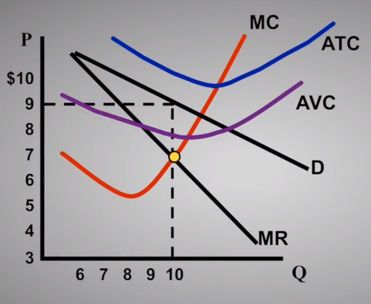
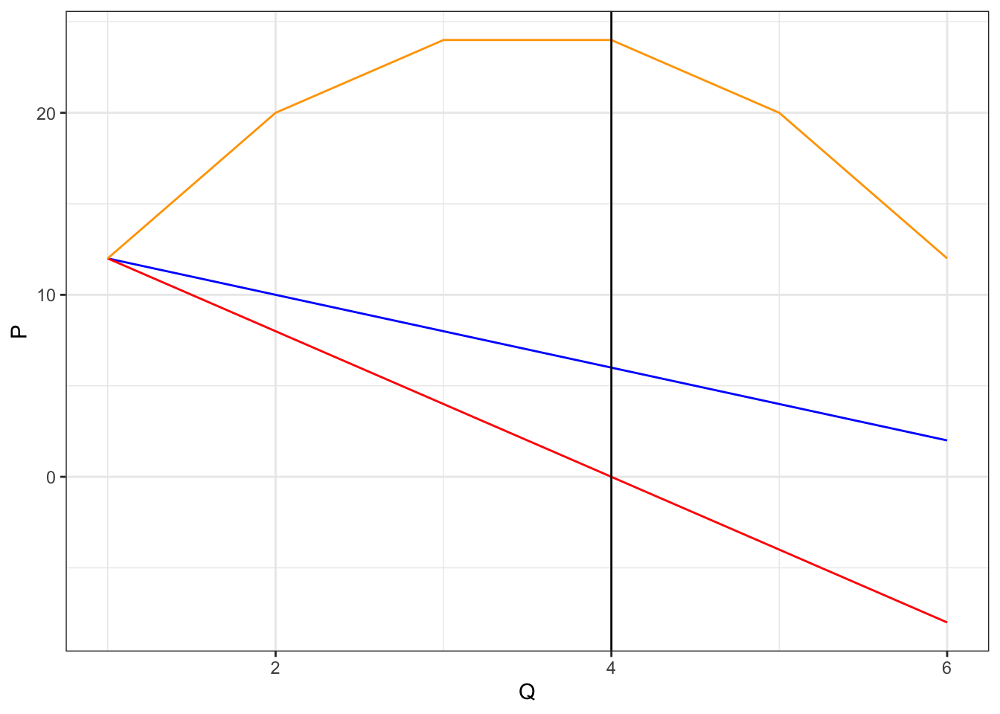
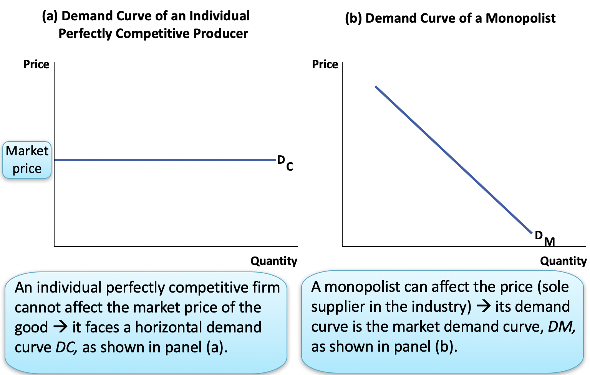
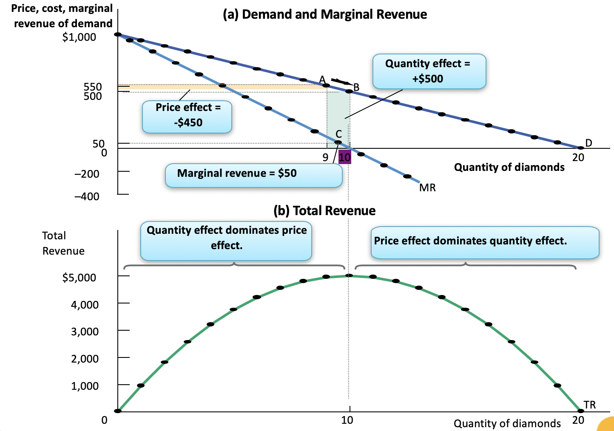
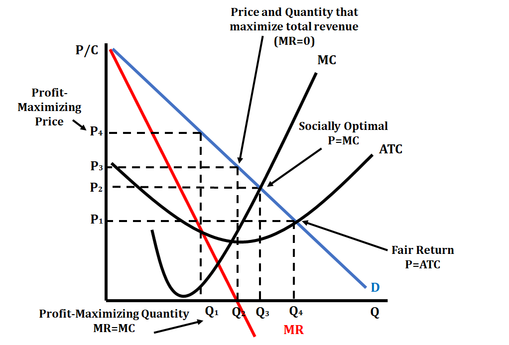
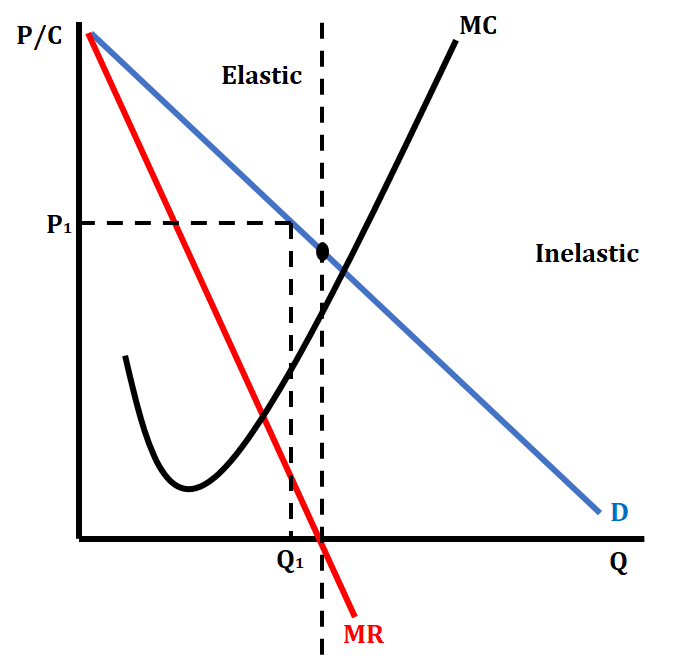
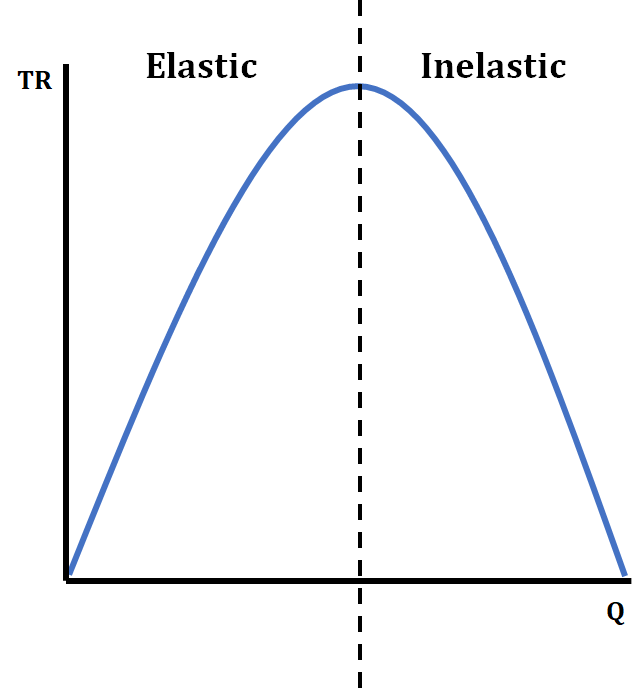
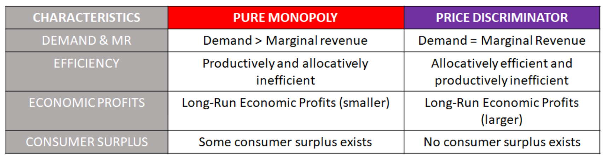
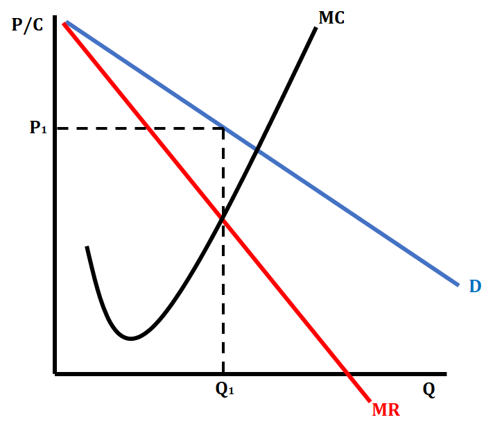
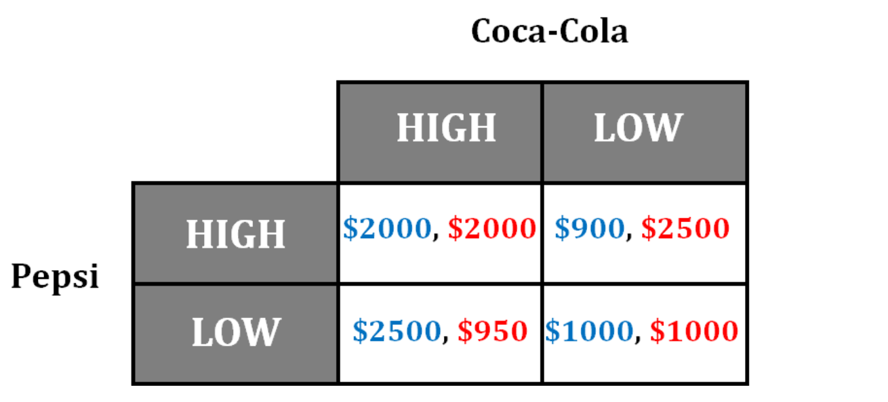

This page is a note for AP micro economics. It is a collection of study materials from sources in the reference list in the bottom and it is reorganized in my preference.
For other units, please refer to the following links
- Unit1:
- Unit2:
- Unit3:
- Unit4:
- Unit5:
- Unit6:
4. Imperfect Competition (15-22%)
In the real world, firms rarely operate in perfectly competitive markets. In this unit, students will encounter the ways in which imperfectly competitive markets depart from the model of perfect competition introduced in Unit 3.
4.1 Introduction
Even with a common goal of profit-maximization, market structure constrains and influences prices, output, and efficiency. Imperfectly competitive markets include monopoly, oligopoly, and monopolistic competition in product markets and monopsony in factor markets.
In imperfectly competitive output markets and assuming all else is constant, a firm must lower price to sell additional units.
In imperfectly competitive markets, consumers and producers respond to prices that are above the marginal costs of production and/or marginal benefits of consumption (i.e., price is greater than marginal cost in an inefficient market).
Incentives to enter an industry may be mitigated by barriers to entry. Barriers to entry — such as high fixed/start-up costs, legal barriers to entry, and exclusive ownership of key resources — can sustain imperfectly competitive market structures.
According to the Wikipedia, in economics, imperfect competition refers to a situation where the characteristics of an economic market do not fulfill at the necessary conditions of a perfectly competitive market, resulting in market failure.
If one of the following conditions are satisfied within an economic market, the market is considered “imperfect”:
- The market’s goods and services are heterogenous or differentiated.
- The market contains ONE or few sellers
- Barriers to make entry or exit.
- Firms are NOT price takers
- Fewer, large firms in the industry
- Firms earn long-run profits (except monopolistic competition, which break even in the long-run)
4.2 Monopolies
One large (e.g., Standard Oil and Electronic Company) firm in the market and the firm is the market.
A monopoly exists because of high barriers to entry.
Monoplies are “price makers”
In a monopoly, equilibrium (profit-maximizing) quantity is determined by equating marginal revenue (MR) to marginal cost (MC). The price charged is greater than the marginal cost.
In a monopoly graph, the demand curve is located above the marginal revenue cost curve. This is because they have to lower their price in order to sell each additional unit. Their profit-maximizing profit output is where MR=MC. The price is determined by going from where MR=MC, up to the demand curve.
Let’s check out the monopoly graph.

How much output should this monopoly produce? why?
How much output would let the company realize the maximum profit?
How much output would let the company realize the maximum total revenue?
What price should this company charge?
- Monopoly would charge up to what people are going to pay!
How much is the revenue?
How much is the cost?
How much is the profit/loss?
How much is the profit/loss per unit?
Should this firm shut down?
How much is the consumer surplus?
How much is the dead weight loss for consumer side?
Demand does not equal marginal revenue
library(DT)
P = seq(from = 14, to = 2, by = -2)
Q = seq(0, 6, 1)
TR = P*Q # elementwise multiplication
MR = c(0,diff(TR))
df = as.data.frame(cbind(P,Q,TR,MR))
datatable(df, rownames = FALSE)library(ggplot2)
df[2:nrow(df),]%>%
ggplot(., aes(x=Q)) +
geom_line(aes(y=P), col='blue') +
geom_line(aes(y=MR), col='red') +
geom_line(aes(y=TR), col='orange') +
geom_vline(xintercept = 4)+
#geom_smooth(aes(y=TR), col='orange', method = 'lm', formula = y ~ poly(x, 2), se = FALSE) +
theme_bw()
From the point where MR=0, the left hand side side is elastic demand and the right hand side is inelastic demand. In the elastic region, a monopoly can lower the price and still increase their total revenue (TR). However, in the inelastic region, if they lower their price, they decrease their total revenue (remember the Total Revenue Test!).
Why is the marginal revenue curve below the demand curve in a monoply?1
A monopolist’s marginal revenue is always less than or equal to the price of the good. Marginal revenue is the amount of revenue the firm receives for each additional unit of output. It is a difference between “total revenue - price times quantity - at the new level of output” and “total revenue at the previous output (one unit less)”
\[\begin{aligned} MR(Q) &= P(Q)\cdot Q-P(Q-1)\cdot(Q-1) \\ &< P(Q)\cdot Q-P(Q)\cdot(Q-1)\qquad\because P(Q-1)>P(Q) \\ &= P(Q) \end{aligned}\] Therefore, the monopolist’s marginal cost curve lies below its demand curve. Another way to see this:
When a monopoly increases amount sold, it has two effects on total revenue:
- the output effect: More output is sold, so \(Q\) is higher.
- the price effect: To sell more, the price must decrease, so \(P\) is lower.
For a competitive firm, there is no price effect. The competitive firm can sell all it wants at the given price.
For a monopoly there is a price effect. It must reduce price to sell additional output. \(P(Q-1)>P(Q)\) So the marginal revenue on its additional unit sold is lower than the price, because it gets less revenue for previous units as well (it has to reduece price to the same amount for all units)

- Because an individual perfectly competitive producer cannot affect the market price of the good, it faces a horizontal demand curve \(D_c\), as shown in panel (a)
- A monopolist, on the other hand, can affect the price. Because it is the sole supplier in the industry, its demand curve is the market demand curve \(D_M\), as shown in panel (b). To sell more output, it must lower the price; by reducing output, it raises the price.
A Monopolist’s Demand, Total Revenue, and Marginal Revenue Curves

Panel (a) shows the monopolist’s demand and marginal revenue curves for diamonds. The marginal revenue curve lies below the demand curve. To see why, consider point Aon the demand curve, where 9 diamonds are sold at 550USD each, generating total revenue of 4,950USD. To sell a 10th diamond, the price on all 10 diamonds must be cut to 500USD, as shown by point B. As a result, total revenue increases by the green area (the quantity effect: +500USD) but decreases by the orange area (the price effect: −450USD). So the marginal revenue from the 10th diamond is 50USD (the difference between the green and orange areas), which is much lower than its price, 500USD.
Panel (b) shows the monopolist’s total revenue curve for diamonds. As output goes from 0 to 10 diamonds, total revenue increases. It reaches its maximum at 10 diamonds—the level at which marginal revenue is equal to 0—and declines thereafter. The quantity effect dominates the price effect when total revenue is rising; the price
Due to the price effect of an increase in output, the marginal revenue curve of a firm with market power always lies below its demand curve.
A profit-maximizing monopolist chooses the output level at which marginal cost is equal to marginal revenue—not to price.
As a result, the monopolist produces less and sells its output at a higher price than a perfectly competitive industry would. It earns a profit in the short run and the long run.
At low levels of output, the quantity effect is stronger than the price effect: as the monopolist sells more, it has to lower the price on only very few units, so the price effect is small.
At high levels of output, the price effect is stronger than the quantity effect: as the monopolist sells more, it now has to lower the price on many units of output, making the price effect very large.
In the language of Elasticity of Demand

The demand curve on a monopoly graph have both elastic, inelastic, and unit elastic sections. We use the quantity where MR=0 to determine the difference. We first draw a line from the quantity where MR=0 up to the demand curve. The point where it hits the demand curve is the unit elastic point. The section above this point is the elastic region of the demand curve, and the section below this point is the inelastic region of the demand curve.
In the elastic region, a monopoly can lower the price and still increase their total revenue (TR). However, in the inelastic region, if they lower their price, they decrease their total revenue (remember the Total Revenue Test!). A monopoly will never willingly produce in the inelastic region because it would lower their profits (marginal revenue is negative, while marginal costs continue to increase). In order for them to produce in the inelastic region, the government has to regulate them with a price ceiling or provide support through a subsidy. (See the graph of both a monopoly and a corresponding TR curve below).


4.3 Price discrimination
In a competitive market, price discrimination occurs when identical goods and services are sold at different prices by the same provider.
A firm with market power can engage in price discrimination to increase its profits or capture additional consumer surplus under certain conditions.
There are three conditions that need to be present in order for a monopoly to practice price discrimination:
- The firm must have monopoly power
- The firm must be able to segregate the market
- Consumers cannot easily re-sell the product in the market
- No facebook market, ebay, carrot market

When a monopoly price discriminates, it becomes allocatively efficient. A pure monopoly always produces less than a perfectly competitive market, meaning its level of output is not allocatively efficient. When a monopoly price discriminates, it earns a higher marginal revenue (MR), so it will increase its output and produce at the allocatively efficient level of output.
By price discriminating, a monopolistic firm will increase its economic profits. A pure monopoly charges a single price, where a price discriminator will charge each consumer at different prices. This eliminates consumer surplus and turns that into revenue, which in turn increases the economic profits that are earned by the firm.
Examples of various situations where monopolies are price discriminating include:
- Travel industry: airlines and other travel companies use price discrimination regularly in order to generate commerce. Prices vary according to seat selection, time of day, day of the week, time of year, and how close a purchase is made to the date of travel.
- Coupons: coupons are used in commerce to distinguish consumers by their reserve price. A manufacturer can charge a higher price for a product which most consumers will pay. Coupons attract sensitive consumers to the same product by offering a discount. By using price discrimination, the seller makes more revenue, even off of the price sensitive consumers.
- A university charging out of state tuition vs in state tuition.
- Gender/Age based prices: uses price discrimination based on gender and age. For example, bars that have Ladies Nights are price discriminating based on gender. A movie theater charging different prices for tickets based on a consumers age.
- A sports team charging different prices for seats in the same section of a stadium.
With perfect price discrimination, a monopolist produces the quantity where price equals marginal cost (just as a competitive market would) but extracts all economic surplus associated with its product and eliminates all deadweight loss.
4.4 Monopolistic competition
In a market with monopolistic competition, firms producing differentiated products may earn positive, negative, or zero economic profit in the short run. Firms typically use advertising as a means of differentiating their product. Free entry and exit drive profits to zero in the long run. The output level, however, is smaller than the output level needed to minimize average total costs, creating excess capacity. The price is greater than marginal cost, creating allocative inefficiency.
Monopolistic competition is an imperfect market structure where many, various sized firms compete for market demand shares. This type of market structure has some characteristics that are the same or similar to perfect competition, as well as some characteristics that are the same or similar to monopolies. Some examples of monopolistic competition include restaurants, clothing companies, jewelers, hair salons, and furniture stores.
Monopolistic competitors can earn positive, negative, or zero economic profit in the short run, and they will break even in the long run (i.e. earn a normal profit) because of low barriers to entry/exit. The graph for a monopolistically competitive firm is very similar to a monopoly, and many people think they look almost identical. The main difference in the elasticity of the demand curve. The demand curve is more elastic in monopolistic competition than it is in a monopoly mainly because there are many more firms in monopolistic competition.
You can see in the graph below that both the demand (D) and marginal revenue (MR) curves are more elastic. We still identify profit-maximizing output and price the same way in monopolistic competition as we do in a monopoly. We identify output where MR=MC, and then go up to the demand curve and over to find the price.

4.5 Oligopoly and game theory
An oligopoly is an imperfect market structure where the industry is dominated by a few, large firms. Some good examples of the types of industries that fall in this type of market structure are the cereal industry, oil industry, and automobile industry.
An oligopoly is an inefficient market structure with high barriers to entry, where there are few firms acting interdependently.
Firms in an oligopoly have an incentive to collude and form cartels.
There are two types of oligopolies that can exist:
- Colluding oligopolies, othewise known as cartels
- Non-colluding oligopolies that practice what we refer to as price leadership
Game Theory
Game theory is the study of how people behave in strategic situations. With the oligopoly market structure, we use a matrix to apply this concept.
A game is a situation in which a number of individuals take actions, and the payoff for each individual depends directly on both the individual’s own choice and the choices of others.
A strategy is a complete plan of actions for playing a game; the normal form model of a game shows the payoffs that result from each collection of strategies (one for each player).
A player has a dominant strategy when the payoff to a particular action is always higher independent of the action taken by the other player. Dominant strategies can be eliminated from each player’s action set and can sometimes lead to an equilibrium outcome
A Nash equilibrium is a condition describing the set of actions in which no player can increase his or her payoff by unilaterally taking another action, given the other players’ actions.
Nash equilibrium refers to an outcome that results when both players choose the strategy that makes them better off, given the other player’s strategy.
Game Theory Example
Provided below is a game theory matrix for the soft drink industry. Coca-Cola and Pepsi are oligopolistic firms that collude to dominate the soft drink market. In this scenario, both firms have the choice to set their prices high or low, and the potential profits for both firms are listed in the matrix. The firms are aware of the payoffs but do not collude when making their decision. The numbers on the right of each box (in red) belong to Coca-Cola and the numbers on the left of each box (in blue) belong to Pepsi.

Let’s look at some sample questions that are typically asked about these type of problems:
If Coca-Cola and Pepsi collude, what will be the payoff for both firms?
They will both choose to charge a high price and they will both earn a $2,000 profit. (This is the best outcome for both of them while colluding)
Does Coca-Cola have a dominant strategy and if so, what is it?
Yes, the strategy is to charge a lower price. We determine this by finding which pricing strategy will be more favorable for Coca-Cola depending on Pepsi’s pricing strategy. If Pepsi goes high, Coca-Cola can either go high and make a $2000 profit, or go low and make a $2500 profit. Since $2500 > $2000, Coca-Cola will go low when Pepsi goes high. If Pepsi goes low, Coca-Cola can either go high and make a $950 profit, or go low and make a $1000 profit. Since $1000 > $900, Coca-Cola will go low when Pepsi goes low. In both situations, Coca-Cola’s pricing strategy is the same, which means that going low is their dominant strategy.
Does Pepsi have a dominant strategy and if so, what is it?
Yes, it is to charge a lower price. We determine this by finding which pricing strategy will be more favorable for Pepsi depending on Coca-Cola’s pricing strategy. If Coca-Cola goes high, Pepsi can either go high and make a $2000 profit, or go low and make a $2500 profit. Since $2500 > $2000, Pepsi will go low when Coca-Cola goes high. If Coca-Cola goes low, Pepsi can either go high and make a $900 profit, or go low and make a $1000 profit. Since $1000 > $900, Pepsi will go low when Coca-Cola goes low. In both situations, Pepsi’s pricing strategy is the same, which means that going low is their dominant strategy.
If Coca-Cola and Pepsi decide NOT to collude and choose their price level on their own, what will be the payoff for both firms? Explain.
Pepsi will have a profit of $1000 and Coca-Cola will have a profit of $1000. Since Coca-Cola has a dominant strategy of a low price and Pepsi has a dominant strategy of a low price, these two decisions meet in the box where Pepsi and Coca-Cola have the profits listed above.
Reference
- Fiveable by Jeanne Stansak and Caroline Koffke
- AP microeconomics course and exam description
- Economics in Modules by Paul Krugman and Robin Wells
- Lumen / Boundless Economics